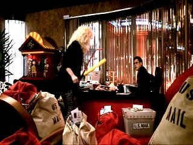

| Soapdish/ B+, B+ |
| Paramount/199196/ANA 1.85 |
Soapdish? It’s great fun, madcap in style. Spoofing daytime soap operas may seem a sudsy exercise, but director Michael Hoffman and company ring out the laughs right from the start cycle. With ratings flagging, The Sun Never Sets needs a script goose. With a phalanx of mumbling writers and producers shaking their heads like a line-up of maracas, finding inspiration takes more than the Latin music beat that carries the film happily along. Complications are played out with hilarious results enhanced by winning performances all around. Sally Field packs plenty of spunk into her small frame; she’s as animated as a cartoon character. Kevin Kline is always terrific, and man, MAN, that Cathy Moriarity is a hoot as Montana Moorehead. Robert Downey, Jr. is putty in Moriarity’s hands, Whoopi Goldberg is under control and Elisabeth Shue provides a fresh face.
 |
| Open season on TV producers. ©Paramount |
It’s fine looking DVD too. The production design emphasizes the great bright colors and the DVD delivers them in full saturation. It’s sharp, punchy, and thoroughly supports the wonderful film.

The Movie Poster Archive includes extensive poster images from the films of stars like Susan Hayward, Kirk Douglas, Katharine Hepburn and many more. Our featured star is Doris Day.

Mother
Night/A-/A-
The eccentric style of Nick Nolte is perfect
for the angst ridden Howard W. Campbell, Jr., a hero or a villain.


Timely DVD reviews and an easy-to-use
interface. Weekly contests.

ISF Monitor
Calibrations in the Tristate New York area. Lots of hardware info
and frequent hardware peaks from video expert Kevin Miller. They may be
judgmental, but that's the point, isn't it. Lots of DVD reviews plus
news and more.

DVD
Dimensions sells DVDs from an easy to use online interface.

Mystery writer Fred Hunter digs into classic
films on DVD. Check out his insightful reviews at The
Classics on DVD.